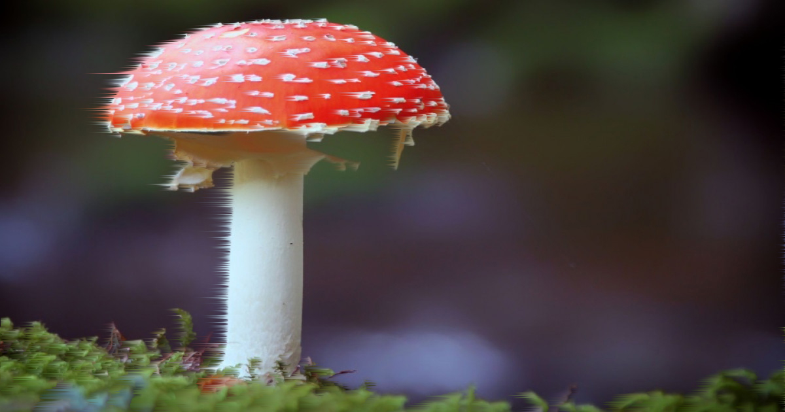

.png)
La ecología es una rama de la biología en la que se estudian y analizan las interacciones entre los seres vivos con el hábitat donde se encuentran, es decir, las relaciones que existen entre los factores bióticos (relaciones entre seres vivos) y los factores abióticos (condiciones ambientales)
Etimológicamente, la palabra ecología deriva del griego ökologie compuesta de la unión de los vocablos griegos oikos, que significa ‘casa’, ‘hogar’ o ‘vivienda’, y logos, que significa ‘estudio’ o ‘tratado’. En este sentido, ecología significa ‘el estudio del hogar’
Fue Ernst Haeckel, científico alemán, quien creó el término ecología en el año 1869 con el fin de designar un nombre a la ciencia que estudia las relaciones entre los seres vivos y el medio ambiente
Por tanto, el objeto de estudio de la ecología está en determinar cómo los factores abióticos (humedad, temperatura, entre otros) interactúan con los factores bióticos (relación entre la gran diversidad de seres vivos que se encuentran en un mismo hábitat). De allí que la ecología haga caso particular a cómo las características particulares de un hábitat influyen en el desarrollo, modificación y comportamiento de las diferentes especies
En este sentido, el concepto de ecología humana se refiere al estudio científico de las relaciones entre los seres humanos y el medio ambiente, incluyendo las condiciones naturales, las interacciones y los aspectos económicos, psicológicos, sociales y culturales. Por tanto, la ecología se enfoca en estudiar los ecosistemas o poblaciones en general. Asimismo, la ecología es una ciencia en la que se desarrollan estudios sobre cuáles pueden ser los cambios que pueden sufrir los ecosistemas a partir de las actividades de los seres humanos.
Ramas de la ecología
- Autoecología: rama de la ecología que estudia cómo son las adaptaciones de las especies a determinadas condiciones de los factores abióticos
- Demoecología (dinámica de la población): rama que estudia, desde la ecología y la demografía, las principales características de las comunidades o población que ocupan un determinado hábitat
- Sinecología (ecología comunitaria): rama de la ecología que estudia la interacción entre las comunidades biológicas y los ecosistemas
- Agroecología: rama que parte de los conocimientos de la ecología y de la agronomía para desarrollar modelos de producción de alimentos en los que se toman en cuenta tanto el ecosistema como el entorno social
- Ecofisiología (ecología ambiental): rama de la ecología que estudia los fenómenos fisiológicos en el medio ambiente, el cual puede experimentar alteraciones debido a diversos fenómenos naturales o a la actividad humana
- Macroecología: rama de la ecología que estudia los patrones ecológicos que se repiten a gran escala
En ecología, se estudian los procesos, la dinámica y las interacciones entre todos los seres vivos de una población, de una comunidad, de un ecosistema o de la biosfera.
"De allí que la ecología haga caso particular a cómo las características particulares de un hábitat influyen en el desarrollo, modificación y comportamiento de las diferentes especies. En este sentido, el concepto de ecología humana se refiere al estudio científico de las relaciones entre los seres humanos y el medio ambiente, incluyendo las condiciones naturales, las interacciones y los aspectos económicos, psicológicos, sociales y culturales. Por tanto, la ecología se enfoca en estudiar los ecosistemas o poblaciones en general"
-Ernst Haeckel